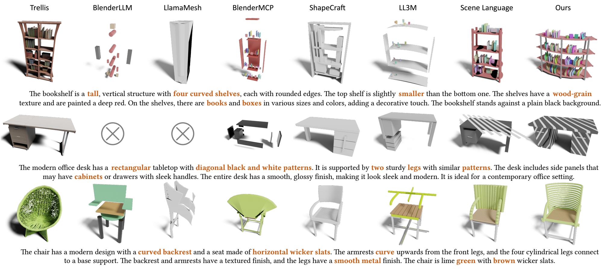
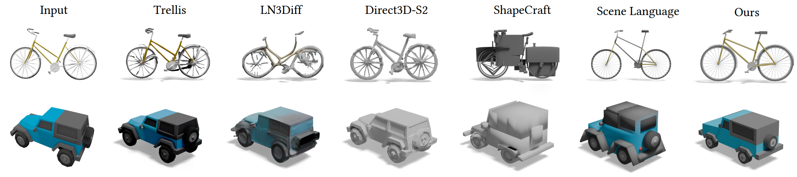
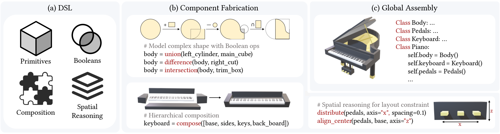
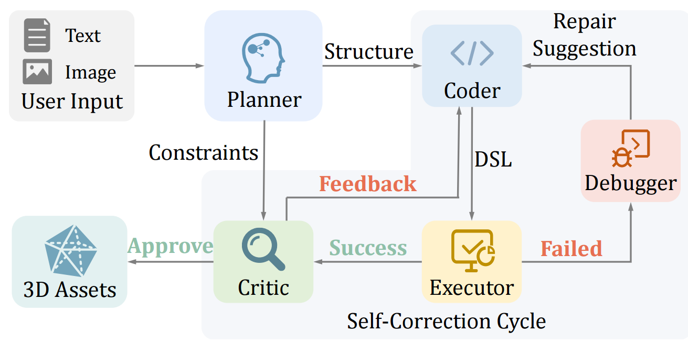

Loading model…
Drag to rotate Scroll to zoom
Faucet
Move the joints
Preparing controls…
Programmatic representations provide a compelling paradigm for 3D content creation, enabling fine-grained edits, interpretability, and explicit structural control. Yet, agentic workflows that rely on large language models (LLMs) to author 3D programs remain brittle, often failing to translate high-level intent into consistent low-level geometry. We attribute this fragility to a mismatch between existing programmatic interfaces and the reasoning strengths of LLMs, which favor semantic structure and spatial relations over fragile numeric choices. In this paper, we jointly design an Agent-centric Domain-Specific Language (aDSL) and a role-specialized multi-agent system to close this gap. aDSL bridges semantic logic and geometric constraints by emphasizing composability and spatial reasoning; it enables agents to manipulate geometry through relational operators instead of brittle absolute coordinates. Building on aDSL, our training-free multi-agent system follows a Plan–Execute–Critic loop to decompose requests, synthesize code, and iteratively repair errors and constraint violations using execution feedback. Experiments show that this co-design improves robustness, controllability, and faithfulness to user intent. Our method outperforms prior LLM-based baselines on text-to-shape and image-to-shape tasks while preserving explicit structure, editability, and interpretability. It also enables downstream applications such as articulated object creation and structured scene composition.


By applying external 3D generative models to structured aDSL outputs, we enhance geometric detail while preserving the original composition and spatial relationships.
aDSL defines movable parts and their joints in the same program, making articulated assets directly executable and editable.


@article{wang2026adsl,
title = {aDSL: Agentic 3D Creation via Joint Agent-Program Design},
author = {Wang, Rui-Huan and Wei, Si-Tong and He, Jia-Qi and Wei, Heng-Yi and Chen, Baoquan and Wang, Peng-Shuai},
journal = {arXiv preprint arXiv:2608.17975},
year = {2026}
}